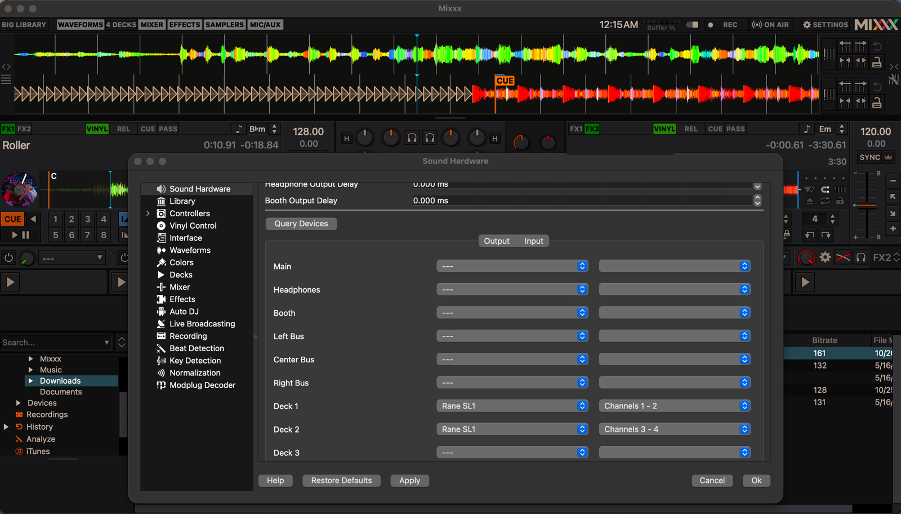
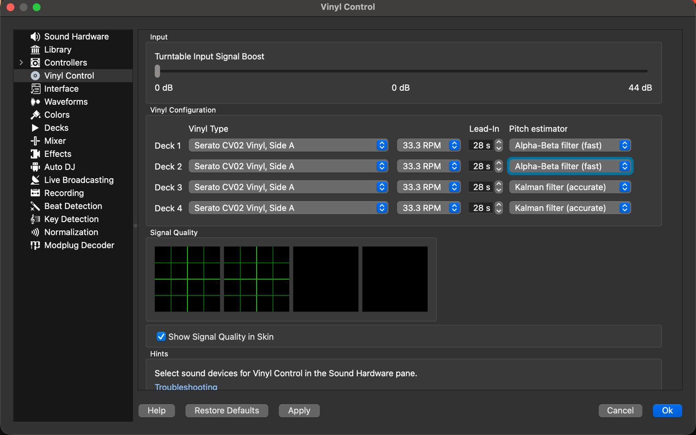
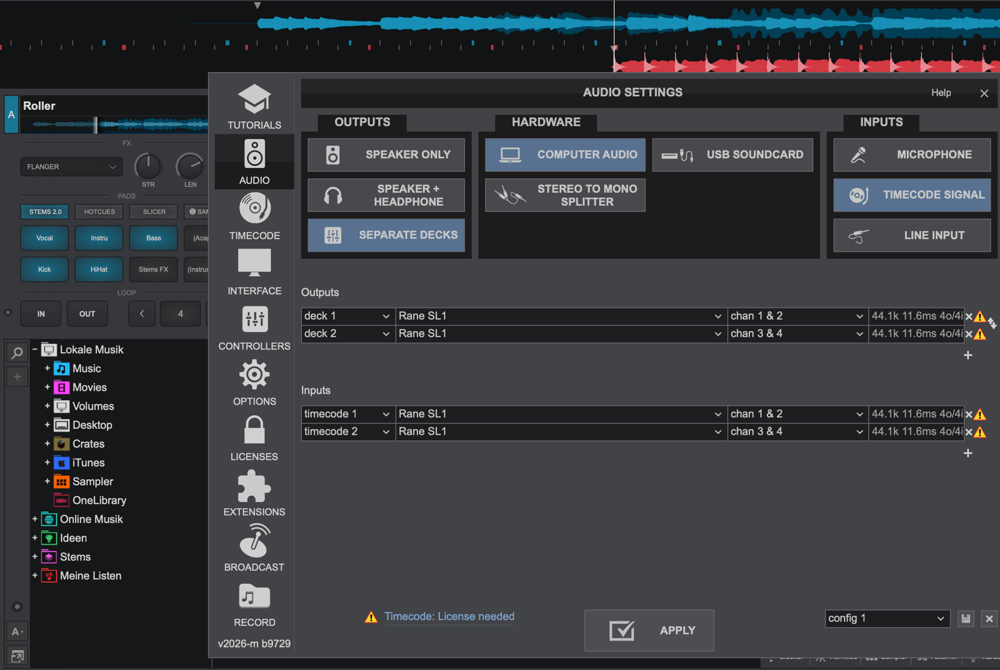

Why OpenSL1?
The SL1 is the original Rane interface for Serato Scratch Live from 2004 – a small box with Input 1/2, Thru and
Line jacks for two decks. On USB it reports itself as Serato Scratch LIVE(c)2004 (13e5:0001).
Serato Scratch Live is legacy 32-bit Intel software: Apple Silicon Macs cannot run it, not even through Rosetta, and Serato DJ never supported the SL1. You need the OpenSL1 driver so macOS sees the SL1 as a sound card – the DJ software on top is your choice.
Which DJ software works with the SL1 on macOS?
| Software | With the SL1 on macOS |
|---|---|
| Mixxx (free, open source) | Works – timecode on both decks, tested with Serato CV02 vinyl |
| VirtualDJ | Sound card works – plays to Line 1 (tested). Timecode needs a paid VirtualDJ licence and has not been tested. |
| Serato Scratch Live | No – legacy 32-bit Intel software, does not run on Apple Silicon |
| Serato DJ Lite / Pro | No – does not accept the SL1; only Serato could change that |
OpenSL1 will never present the SL1 as another device and does not circumvent any licence checks.
Features
Installation
- Download OpenSL1-0.1.3.pkg from the latest release.
- Open it and follow the installer.
- Plug in the SL1 – it appears as “Rane SL1” in Audio MIDI Setup and in Mixxx.
Mixxx setup
| Where | Setting |
|---|---|
| macOS microphone prompt | Allow – otherwise no timecode reaches Mixxx |
| Preferences → Sound Hardware | CoreAudio, 44100 Hz, buffer 5.8 ms (2.9 ms worked on a MacBook Air M4, with less safety margin) |
| Output: Deck 1 / Deck 2 | “Rane SL1” channels 1–2 / 3–4 |
| Output: Main, Headphones | None – your DJ mixer does that |
| Input: Vinyl Control 1 / 2 | “Rane SL1” channels 1–2 / 3–4 |
| Preferences → Vinyl Control | Serato CV02 Vinyl, Side A, 33⅓ RPM, mode REL, Alpha-beta filter |


VirtualDJ setup
| Where | Setting |
|---|---|
| Settings → Audio → Outputs | Separate decks: deck 1 → “Rane SL1” chan 1 & 2, deck 2 → chan 3 & 4 |
| Settings → Audio → Inputs | Timecode signal: timecode 1 → chan 1 & 2, timecode 2 → chan 3 & 4 |
| Settings → Timecode | Mode relative, Record Serato side A |

Measured performance
MacBook Air M4, macOS 27, Mixxx 2.6.0-beta, two turntables and a DJ mixer.
| Hardware loop (USB + converters) | 2.9 ms |
| Record → line out (5.8 ms buffer) | ≈ 35 ms |
| 15 min of timecode on both decks | ≈ 906 000 packets per input, 0 errors |
| Replug during playback | audio back 0.3 s after plugging in |
FAQ
Is there a Rane SL1 driver for macOS and Apple Silicon?
Yes – OpenSL1 is a free, open-source, unofficial CoreAudio driver for the Rane SL1 (Serato Scratch Live) on Apple Silicon Macs with macOS 12 or later. The installer is universal, so Intel should work too, but that is untested.
Does Serato Scratch Live still work on a modern Mac?
No. It is legacy 32-bit Intel software and does not run on Apple Silicon, not even through Rosetta. OpenSL1 replaces the missing driver; for the DJ software use Mixxx (free) or VirtualDJ.
Does the SL1 work with Serato DJ Lite or Pro?
No. Serato DJ never supported the SL1 and does not accept it – only Serato could change that. OpenSL1 will never pretend the SL1 is a different device.
Which timecode vinyl can I use?
Serato CV02 (Side A, 33⅓ RPM) is tested with Mixxx. VirtualDJ has its own control vinyl and, according to community reports, also reads Serato CV02 – unverified here. OpenSL1 only delivers the audio signal; decoding the timecode is up to your DJ software.
Sound drops when I plug the Mac’s charger in or out
The SL1 is powered over USB and can drop off when the Mac switches between charger and battery; occasionally it stays away until you replug it. Plug the charger in before the set and leave it alone.
Is it safe?
OpenSL1 is a user-space audio plug-in, not a kernel extension. It runs inside macOS’s sandboxed audio service with access to the SL1 only – no files, no network. The full source is on GitHub.
Disclaimer
Rane, SL1, Serato and Scratch Live are trademarks of their respective owners and are used here only to name the hardware and software this driver works with.